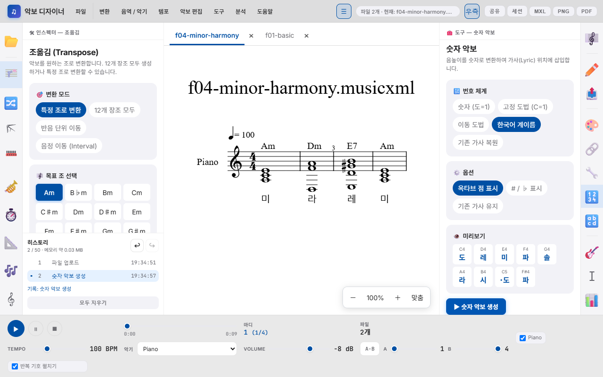
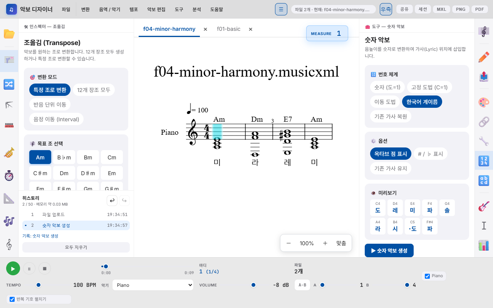

MXL STUDIO09 · 2026.09
악보 디자이너
사용자 설명서
파일을 불러오고, 편집 결과를 확인하고, 수업과 연주에 쓸 악보를 저장하는 단계별 안내입니다.
01. 파일을 불러오고 선택하기
현재 악보 이름을 확인한 뒤 도구를 실행하세요.
- 파일 업로드 영역을 누르거나 파일을 끌어 놓습니다.
- 파일이 두 개 이상이면 악보 위에 파일 탭이 나타납니다. 탭이나 업로드 목록에서 현재 악보를 선택합니다.
- 패널의 조성·파트·마디 수는 현재 악보를 기준으로 표시됩니다. 변환 도구 중에는 업로드된 여러 파일에 적용되는 기능도 있으므로 중요한 원본은 먼저 내보내세요.


파일당 20MB, 한 번에 30개까지 업로드합니다. 같은 이름은 (2)처럼 구분하고, 오류가 난 파일은 결과 로그에 표시합니다.
중앙 악보를 확대·축소하거나 너비에 맞출 수 있습니다. 저장 상태와 업로드 결과는 화면 알림으로 표시됩니다.
02. 편집 도구 10개
| 도구 | 사용 방법 |
|---|---|
| 파일 업로드 | MusicXML/XML/MXL 파일을 불러오고 선택·닫기·전체 삭제를 수행합니다. |
| 조옮김 | 목표 조·반음·음정을 선택합니다. 음표와 코드 심볼, 슬래시 베이스를 함께 바꾸고 단조를 유지합니다. |
| 마디별 조바꿈 | 시작 마디와 목표 조를 추가해 구간별 조표와 음높이를 바꿉니다. |
| 카포 | 시작 마디와 프렛을 지정합니다. 프렛만큼 음표와 코드를 내려 기타 코드 폼을 만들고 Capo 문구를 넣습니다. |
| 음역대 조정 | 칼림바 등 악기를 선택하면 음표를 가능한 옥타브로 이동합니다. |
| 이조 악기 | 실음과 이조 악보 중 변환 방향을 고릅니다. 악기별 조옮김 정보를 악보에 반영합니다. |
| 템포 조절 | 목표 BPM과 sound/metronome 적용 여부를 고릅니다. |
| 마디별 템포 | 시작 마디별 BPM을 지정합니다. 재생은 후속 템포의 비율을 유지합니다. |
| Ossia 마디 | 원래 마디 번호로 대체 연주 범위를 선택합니다. 못갖춘마디는 0부터 선택하며 저장·복원·공유됩니다. |
| 음자리표 변환 | 목표 음자리표와 옥타브 자동 이동 여부를 지정합니다. |
변환 실행 후 악보와 결과 로그를 확인합니다. Ctrl+Z로 실행 취소, Ctrl+Y 또는 Ctrl+Shift+Z로 다시 실행합니다. 작업 기록은 최대 50개입니다.
03. 분석과 출력 도구 11개
| 도구 | 사용 방법 |
|---|---|
| 파트 추출 | 남길 파트만 켜고 추출합니다. 실행 취소로 되돌릴 수 있습니다. |
| 악보 표기 변환 | 보표·가사·코드 숨기기, 1줄 보표, 슬래시 음표를 적용합니다. |
| 이미지 / PDF | 미리보기 후 PNG·SVG·인쇄 PDF 또는 여러 파일 PNG ZIP을 저장합니다. |
| 색깔 악보 | 음이름에 따른 색을 음표와 기둥에 적용합니다. |
| 화성 쌓기 | 3도 위·아래 음을 조성 기반 또는 일정 간격으로 추가합니다. |
| 코드 도구 | 심볼 일괄 치환, 자동 삽입, 자리바꿈을 적용합니다. C/E, F#m7b5, Bbadd9, N.C.도 처리합니다. |
| 숫자 악보 | 숫자·고정도법·이동도법·한국어 계이름을 가사 위치에 넣습니다. 기존 가사 복원도 선택할 수 있습니다. |
| 가사 스타일 | 가사 크기·굵기·기울기·글꼴·음높이별 색상을 조정합니다. |
| 코드 분석 | 기존 코드 심볼 목록이나 수직 음향 분석 결과를 확인합니다. |
| 로마 숫자 분석 | 장조·단조·전위·부속화음과 종지를 분석하고 로마 숫자를 악보에 삽입합니다. |
| 통계 분석 | 파일·음표·쉼표 수, 음역, 리듬 분포, 작곡 스타일 통계를 봅니다. |
분석은 첫 조표와 악보에 기록된 음을 기준으로 한 자동 해석입니다. 수업 자료에 사용하기 전에 결과를 직접 확인하세요.
04. 조옮김과 화성 분석


- 조옮김에서 특정 조로 변환·반음 단위 이동·음정 이동 중 방식을 고릅니다.
- 자동, ♯ 우선, ♭ 우선 중 음이름 표기를 선택하고 변환 실행을 누릅니다.
- 오른쪽 로마 숫자 분석을 실행합니다. 전위와 부속화음은 I6, V7/V처럼 표시됩니다.
- 악보에 삽입을 누르면 마디 위에 분석 기호가 들어갑니다.

붙임줄과 가사 등 원래 음악 구조는 유지합니다. 코드 종류와 슬래시 베이스도 조옮김에 반영합니다.
05. 작업 기록과 세션

- 상단 세션을 열어 이름을 입력하고 저장합니다.
- 목록에서 불러오기·이름 변경·삭제·JSON 내보내기를 선택합니다. 현재 작업을 바꾸거나 삭제할 때는 창 안에서 확인합니다.
- 다른 컴퓨터로 옮길 때는 JSON 가져오기를 사용합니다.
- 자동저장 안내가 보이면 복원하기로 파일과 현재 선택을 되찾습니다.
자동저장은 변경 후 약 5초 뒤 실행합니다. 같은 상태는 다시 저장하지 않습니다. 세션에는 파일·선택·Ossia가 저장되며, 50개 작업 기록 전체가 세션에 복원되지는 않습니다.
06. 저장·공유·내보내기


| 목적 | 선택 |
|---|---|
| 다른 악보 프로그램에서 편집 | MXL: 표준 압축 MusicXML, 메뉴의 XML: 비압축 MusicXML |
| 현재 작업 이어하기 | 세션 저장과 JSON 백업. Ossia를 함께 보관합니다. |
| 링크로 악보 전달 | 공유: 선택한 악보의 현재 편집 내용을 URL에 담습니다. 너무 긴 링크는 파일 전달을 이용합니다. |
| 수업 자료·인쇄 | PNG·SVG 또는 PDF. PDF 버튼은 브라우저 인쇄 창을 열며 악보만 출력합니다. |
저장된 링크와 파일에 악보 데이터가 포함됩니다. 공유할 상대에게 전달할 자료가 맞는지 확인하세요. PDF는 인쇄 창에서 PDF로 저장을 선택하고 용지와 배율을 확인합니다.
07. 화면과 재생 조절

| 조작 | 동작 |
|---|---|
| Ctrl+B / Ctrl+Shift+B | 왼쪽 / 오른쪽 패널 열고 닫기 |
| Ctrl+＋ / Ctrl+－ / Ctrl+0 | 악보 확대 / 축소 / 100% |
| 파일 탭 ← →, Home, End, Delete | 탭 이동과 파일 닫기 |
| 메뉴 방향키·Enter·Escape | 항목 이동·실행·닫기 |
| 패널 사이 경계 드래그 / 방향키 | 패널 너비 조절과 저장 |
하단 ▶를 처음 누르면 재생 라이브러리를 불러옵니다. 파트·악기·음량·BPM을 고를 수 있고, 반복 기호 펼치기는 기본으로 켜져 있습니다. A-B는 펼쳐진 재생 순번을 기준으로 반복 구간을 정합니다.
붙임줄·셈여림·마디 안 템포 변화·반복 괄호를 반영합니다. D.C./D.S./Fine/코다 이동은 아직 지원하지 않습니다. 오디오는 브라우저 합성음이며 원본 악기 녹음을 재현하지 않습니다.
08. 모바일과 재생 커서


- 모바일에서 상단 도구를 눌러 전체 도구 목록을 엽니다.
- 원하는 도구를 선택하고 실행합니다. 목록으로 돌아가거나 닫기를 눌러 악보를 봅니다.
- 상단 ⋯ 메뉴에서 공유·세션·MXL·PNG·PDF를 선택합니다.
재생 커서는 반복과 A-B 구간에서 원래 마디로 되돌아갑니다. 못갖춘마디 0도 그대로 표시합니다. 기기의 동작 줄이기 설정을 따릅니다.
09. 문제 해결과 예정 기능
문제 해결
- 시작 화면에서 멈추면 네트워크와 외부 라이브러리 차단 여부를 확인한 뒤 새로고침합니다.
- 악보 렌더링 오류에는 다시 렌더 버튼을 사용합니다. 파트·마디 구조가 있는 MusicXML인지 확인합니다.
- 재생 로드 실패 시 악보 편집과 파일 저장을 계속할 수 있습니다.
- 큰 악보의 공유 링크나 브라우저 저장 한도에 걸리면 MXL·JSON으로 보관합니다.
예정 기능
다음 항목은 이 버전에 포함되어 있지 않은 예정 기능입니다. 이전 문서의 설명을 현재 기능과 구분해 이 절로 옮겼습니다.
- 주석 메모 레이어와 자유로운 가사 편집
- 운지법 표시, 청음 훈련, 난이도 평가
- QR 코드 공유, 성부 진행·패턴 검색·형식 분석
- 사운드폰트, WAV/MIDI/ABC/LilyPond 내보내기, Web MIDI
- AI 어시스턴트, PWA 및 클라우드 동기화
확장은 설계 문서의 선택 항목인 Phase 9에서 별도로 다룹니다.